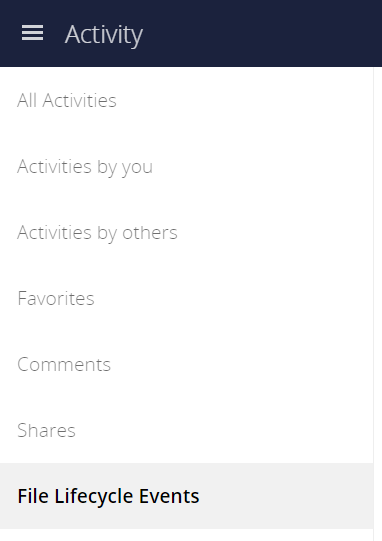

File Lifecycle Management
Introduction
The File Lifecycle Management extension allows service providers to manage the lifecycle of files within ownCloud to
-
keep storage usage under control by limiting the time users can work with files before they are cleaned up automatically
-
comply with regulations (like GDPR or company policies) by imposing automated retention and deletion policies for files that contain e.g., personal data and may only be stored in the company for a certain period of time.
To impose a workflow of Use ⇒ Archive ⇒ Delete, the extension equips ownCloud with a dedicated archive and allows administrators to define rules for automated archiving (days passed since upload) and subsequent deletion of files (days passed since archiving). Only files are archived as folders do not consume storage space and existing folder structures should be kept available. The archiving and deletion processes are controlled by background jobs.
Depending on the desired level of enforcement, the extension provides two policies to control the restoration of files from the archive if they are still needed:
-
Soft policy: Users can restore files in self-service
-
Hard policy: Only administrators or group administrators can restore files on request
Users can view the lifecycle status for a file and see when the file is scheduled for archiving or deletion. All lifecycle events of a file are displayed transparently. They can be tracked for individual files as well as for a whole user account using the Activity stream.

To stay informed, users can also receive regular Activity summaries by email. For auditing purposes, the extension integrates with the Auditing app to provide all events of interest in the logs.
Setup & Configuration
See the lifecycle occ command set for details when using the command line.
Archive Location
By default, archived files are stored within the ownCloud data directory but outside the users' files directories so that they are not accessible using the Web UI and other clients.
| Type | Location |
|---|---|
User files |
|
Archived files |
|
Setting Upload Times for Existing Files
File Lifecycle Management uses the upload time of files (server time at which they first appeared on the ownCloud server) to determine when to archive them. As ownCloud Server generally does not store this metadata, the File Lifecycle Management extension takes care of this when it is enabled.
When File Lifecycle Management is set up on an existing ownCloud installation, you therefore have to set an upload time for all files that existed before the extension has been enabled. The same applies if it was temporarily disabled. Only then can the archiving policies work. To set an upload time for all files that do not yet have one, you can use the occ command lifecycle:set-upload-time.
| Files without an upload time will not be considered for archiving. |
| You only have to conduct this process once when setting up File Lifecycle Management on an installation with existing files or if it was temporarily disabled . Files added after enabling File Lifecycle Management will be tracked automatically. |
Example to set missing upload time values to November, 1st 2019:
sudo -u www-data ./occ lifecycle:set-upload-time 2019-11-01| The extension only considers files. Folder structures are kept available. |
Policy Configuration
Overview
File Lifecycle Management uses policies to determine which files to archive and when, as well as when to expire the files from archive. In addition, a soft and a hard policy are available to control whether users can restore archived files in self-service or not.
Three options are available for controlling the archiving and expiration policies, all set via the config:app:set occ command under the files_lifecycle app:
-
archive_period- The number of days passed after upload (or restore) that files will be archived -
expire_period- The number of days passed after archiving that files will be permanently deleted -
excluded_groups- Allows defining groups of users that are exempt from the Lifecycle policies (comma-separated group ids)
Example to set the time passed since upload (or restore) for archiving files to 90 days:
sudo -u www-data ./occ config:app:set files_lifecycle archive_period --value='90'To query existing values, use this example command:
sudo -u www-data ./occ config:app:get files_lifecycle archive_periodRestoration Policies for Users
Soft Policy
The soft policy aims at use cases where users should be allowed to restore files from the archive in self-service if they are still needed. It imposes a soft archiving enforcement but on the other hand relieves IT departments when archived files need to be restored. The soft policy is used by default. To switch from the hard policy to the soft policy, use this occ command:
sudo -u www-data ./occ config:app:set files_lifecycle policy --value='soft'Hard Policy
The hard policy is designed to enforce strict controls on user data, forcing archiving after the defined time and requiring escalated permissions in order to restore. If the archived data is still needed, users need to get in contact with a privileged manager and request the restoration.
| When the hard policy is in place only administrators (or also group administrators, depending on the configuration) are able to restore files from the archive by impersonating the respective users. The Impersonate app has to be installed and enabled as a prerequisite. Apart from that, system administrators can also use occ commands to restore data from the archive (see section Restoring Files). |
To put the hard policy in place, use this occ command:
sudo -u www-data ./occ config:app:set files_lifecycle policy --value='hard'Archive and Expiration Background Jobs
To put File Lifecycle Management into actual operation, there are two occ commands for archiving files and for permanently deleting them from the archive. Scanning the database for files that are due for archiving or expiration, given the chosen policies, can take some time. For this reason, these jobs are delegated to specific occ commands which should be executed using CRON on a daily schedule.
Archiving Background Job
To move files scheduled for archiving (days since upload/restore > archive_time) into the archive, execute the following occ command:
sudo -u www-data ./occ lifecycle:archive
There is a dry-run mode (append -d) that simulates the execution of this command to allow checking the configuration before putting the actual process in place.
|
Archive Expiration Background Job
To permanently delete files from the archive that have met the policy rules (days since archiving > expire_period), execute the following occ command:
sudo -u www-data ./occ lifecycle:expire
There is a dry-run mode (append -d) that simulates the execution of this command to allow checking the configuration before putting the actual process in place.
|
Restoring Files
If archived files are still needed, users can restore them in self-service (soft policy) or have to request the restoration via privileged managers (hard policy).
| When files have been restored, they can again be used for the same amount of time as they were initially available. |
Apart from that, system administrators can restore files from the archive using the occ command lifecycle:restore:
Restoration by Path
When a user alice requests to restore all files, e.g., in the folder /work/projects/project1, a system administrator can execute the following command:
sudo -u www-data ./occ lifecycle:restore /alice/archive/files/work/projects/project1Restoring All Files from All Archives
File Lifecycle Management provides a way to restore all files from all archives back to their owners' file directories. To do this, system administrators can use the restore-all occ command:
sudo -u www-data ./occ lifecycle:restore-allThe command will restore all files from all users and report on the progress.
There is a dry-run mode (append -d) that simulates the execution of this command to allow checking the configuration before putting the actual process in place.
|
Enabling/Disabling the User Interface Components
In some scenarios it can be desired to disable the whole user interface for this app. This can be done by setting the following configuration value:
sudo -u www-data ./occ config:app:set files_lifecycle disable_ui --value='yes'To enable the user interface components again, this config value needs to be removed:
sudo -u www-data ./occ config:app:delete files_lifecycle disable_uiAudit Events
During archiving, restoring and expiration, Audit events are emitted. Logging those to the audit.log requires the minimum version 2.0.0 of the Auditing app.
Further Notes about Archived Files
-
File shares will disappear after archiving. When restoring archived files, shares will also be restored.
-
Users' archives currently can’t be transferred with the occ command
transfer-ownership -
Files within a user’s trash bin are not archived. The regular trash bin deletion policies have to be used to take care of those.
-
Archived files count towards the user’s quota